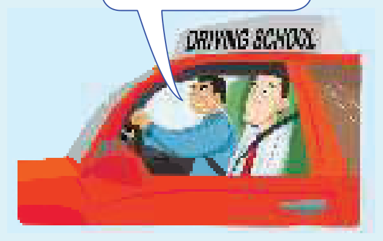

Learning Objectives
- Use the present perfect for a period that continues from the past until now
- Ask and answer questions with ever and never
- Understand that been (to) means visited
- Use the present perfect with unfinished periods: today, this year, recently, so far, since I arrived
- Say It's the first time he has driven a car — and It's the second time this has happened
- Choose between He hasn't driven a car before and He has never driven a car before
Part A — Theory
Study this example conversation
Dave: Have you travelled a lot, Jane?
Jane: Yes, I've been to lots of places.
Dave: Really? Have you ever been to China?
Jane: Yes, I've been to China twice.
Dave: What about India?
Jane: No, I haven't been to India.
When we talk about a period of time that continues from the past until now, we use the present perfect (have been / have travelled etc.). Here, Dave and Jane are talking about the places Jane has visited in her life, which is a period that continues until now.
past → now
Jane's life
(a period until now)
past → now
recently
in the last few days
since I arrived
past → now
today
In the same way we say
Have you ever eaten caviar?
We've never had a car.
I don't know what the film is about. I haven't seen it.
Susan really loves that book. She's read it three times. (She's = She has)
It's a really boring movie. It's the most boring movie I've ever seen.
been (to) = visited
I've never been to Canada. Have you been there?
A period that continues until now
In the following examples too, the speakers are talking about a period that continues until now (recently, in the last few days, so far, since I arrived etc.):
Have you heard anything from Ben recently?
I've met a lot of people in the last few days.
Everything is going well. There haven't been any problems so far.
The weather is bad here. It's (= It has) rained every day since I arrived. (= from when I arrived until now)
It's good to see you again. We haven't seen each other for a long time.
In the same way we use the present perfect with today, this evening, this year etc. when these periods are not finished at the time of speaking:
I've drunk four cups of coffee today.
Have you had a holiday this year?
I haven't seen Tom this morning. Have you?
It's the first time something has happened

Don is having a driving lesson. It's his first lesson.
We can say:
It's the first time he has driven a car. (not drives)
or He hasn't driven a car before.
or He has never driven a car before.
In the same way we say:
Sarah has lost her passport again. This is the second time this has happened. (not happens)
Andy is phoning his girlfriend again. It's the third time he's phoned her this evening.
Present perfect 1 ➜ Unit 7
Present perfect + for/since ➜ Units 11–12
Present perfect and past ➜ Units 12–14
Part B — Exercises
You ask people about things they have done. Write questions with ever.
- (ride / horse?)
- (be / California?)
- (run / marathon?)
- (speak / famous person?)
- (most beautiful place / visit?) What's
Complete B's answers. Some sentences are positive and some negative. Use these verbs:
- What's Mark's sister like? — I've no idea. I've her.
- Is everything going well? — Yes, we any problems so far.
- Are you hungry? — Yes. I much today.
- Can you play chess? — Yes, but for ages.
- Are you enjoying your holiday? — Yes, it's the best holiday for a long time.
- What's that book about? — I don't know. it.
- Is Brussels an interesting place? — I've no idea. there.
- I hear your car broke down again yesterday. — Yes, it's the second time this month.
- Do you like caviar? — I don't know. it.
- Mike was late for work again today. — Again? He late every day this week.
- Who's that woman by the door? — I don't know. her before.
Write four sentences about yourself. Use I haven't and choose from the boxes.
- I today.
- I this week.
- I recently.
- I for ages.
- I today.
Read the situations and complete the sentences.
Contractions like It's and full forms like It is are both accepted, as are she's and she has.
- Jack is driving a car for the first time. He's very nervous and not sure what to do. It's the first time a car.
- Some children at the zoo are looking at a giraffe. They've never seen one before. It's the first time a giraffe.
- Sue is riding a horse. She doesn't look very confident or comfortable. She a horse before.
- Joe and Lisa are on holiday in Japan. They've been to Japan once before. This is the second time .
- Emily is staying at the Prince Hotel. She stayed there a few years ago. It's not the first this hotel.
- Ben is playing tennis for the first time. He's a complete beginner. before.
Answer Key
Exercise 8.1 — Questions with ever
- Have you ever ridden a horse?
- Have you ever been to California?
- Have you ever run a marathon?
- Have you ever spoken to a famous person?
- What's the most beautiful place you've ever visited? / the most beautiful place you have ever visited?
Exercise 8.2 — Complete B's answers
- What's Mark's sister like? — I've no idea. I've never met her.
- Is everything going well? — Yes, we haven't had / have not had any problems so far.
- Are you hungry? — Yes. I haven't eaten / have not eaten much today.
- Can you play chess? — Yes, but I haven't played / I have not played (it) for ages.
- Are you enjoying your holiday? — Yes, it's the best holiday I've had / I have had for a long time.
- What's that book about? — I don't know. I haven't read it.
- Is Brussels an interesting place? — I've no idea. I've never been / I haven't been there.
- I hear your car broke down again yesterday. — Yes, it's the second time it's happened / it has happened this month. (or that's happened / that has happened)
- Do you like caviar? — I don't know. I've never tried / I haven't tried it. (or I've never eaten / I haven't eaten)
- Mike was late for work again today. — Again? He's been / has been late every day this week.
- Who's that woman by the door? — I don't know. I've never seen / I haven't seen her before.
Exercise 8.3 — Sentences about yourself
- I haven't used a computer / have not used a computer today.
- I haven't travelled by bus / have not travelled by bus this week.
- I haven't been to the cinema / have not been to the cinema recently.
- I haven't read a book / have not read a book for ages.
- I haven't lost anything / have not lost anything today.
Exercise 8.4 — It's the first time …
- Jack is driving a car for the first time. It's the first time he's driven / he has driven a car.
- Some children at the zoo are looking at a giraffe. It's the first time they've seen / they have seen a giraffe.
- Sue is riding a horse. She's never ridden / She has never ridden a horse before.
- Joe and Lisa are on holiday in Japan. This is the second time they've been to Japan / they have been to Japan.
- Emily is staying at the Prince Hotel. It's not the first time she's stayed at / time she has stayed at / time Emily has stayed at this hotel.
- Ben is playing tennis for the first time. He's never played tennis / He has never played tennis before. (or He hasn't played tennis / Ben hasn't played tennis before)
Summary
| Use | Example |
|---|---|
| A period that continues from the past until now (Jane's life) | I've been to lots of places. Have you ever been to China? |
| been (to) = visited | I've never been to Canada. |
| Experience with ever / never | Have you ever eaten caviar? We've never had a car. |
| Recently, in the last few days, so far, since I arrived | I've met a lot of people in the last few days. There haven't been any problems so far. |
| Unfinished periods: today, this evening, this year | I've drunk four cups of coffee today. Have you had a holiday this year? |
| It's the first time something has happened | It's the first time he has driven a car. |
| Saying it the other way round | He hasn't driven a car before. / He has never driven a car before. |
| Second and third time | This is the second time this has happened. It's the third time he's phoned her this evening. |